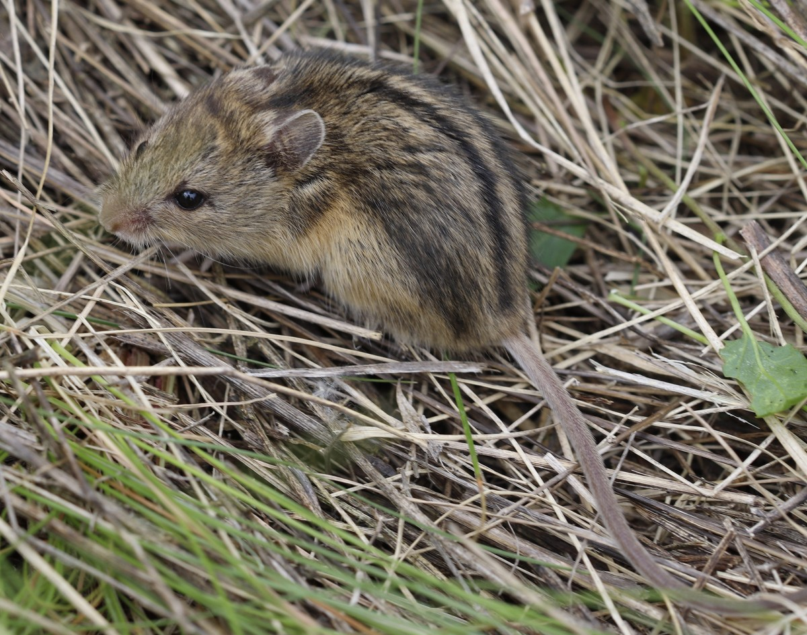
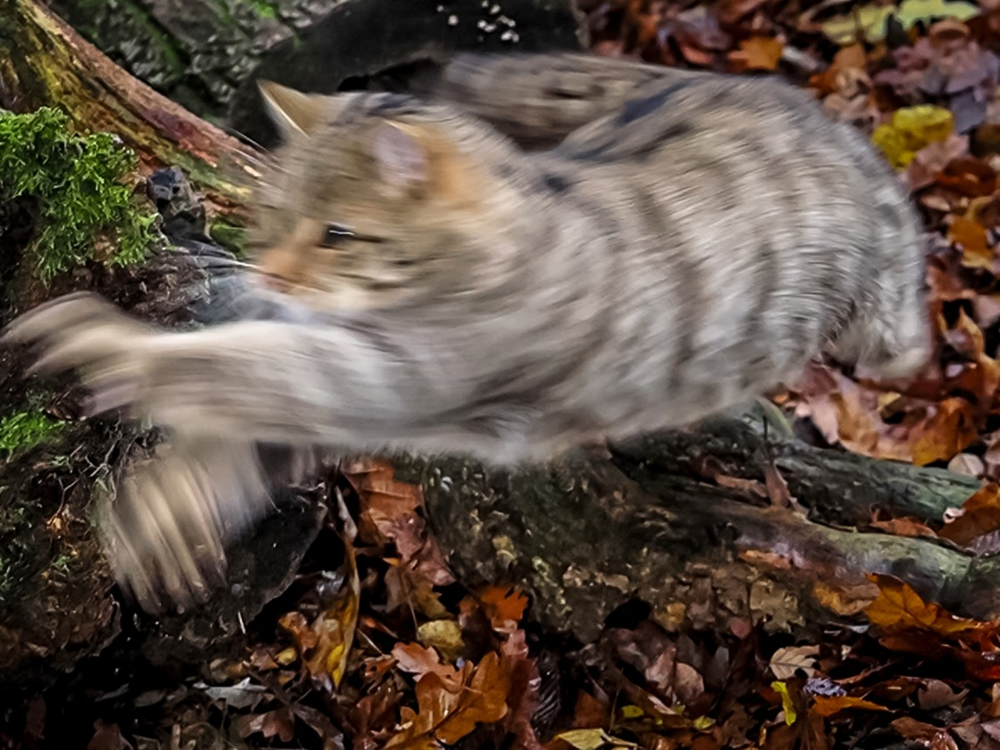
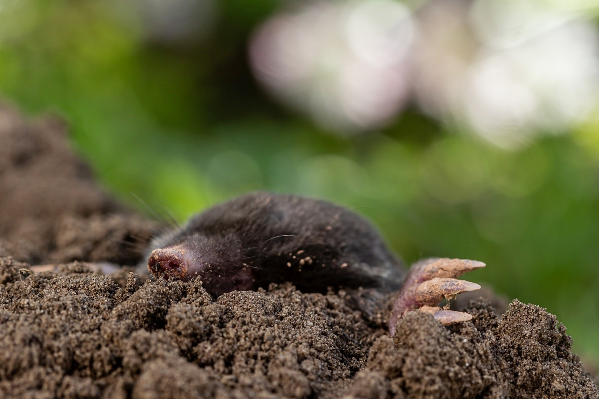
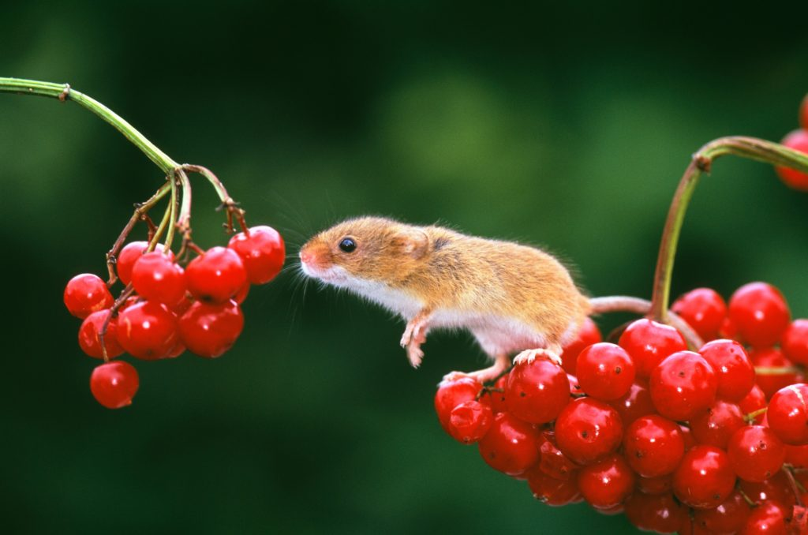
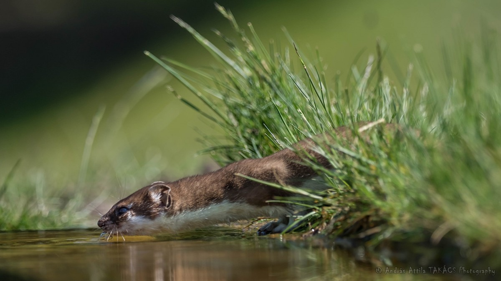

Az Év Emlőse program a Vadonleső Program keretében 2014-ben indult útjára az Agrárminisztérium és a Herman Ottó Intézet Nonprofit Kft. gondozásában. A kezdeményezés célja, hogy minden évben egy-egy őshonos, védett vagy fokozottan védett emlősfajra irányítsa a közfigyelmet, elősegítve azok megismerését és hatékonyabb védelmét a hazai természetvédelem eszközeivel.
A program során az adott év kiválasztott állatfajához kapcsolódóan számos ismeretterjesztő előadást, terepbejárást és kreatív pályázatot szerveznek, amelyek különösen a fiatalabb generációkat szólítják meg. A választásnál gyakran olyan fajokat emelnek ki, amelyek rejtőzködő életmódjuk vagy ritkaságuk miatt kevésbé ismertek a nagyközönség számára, így a közösségi adatgyűjtés (citizen science) révén a lakosság is hozzájárulhat az állományok nyomon követéséhez.
Míg 2025-ben a ritka és fokozottan védett magyar szöcskeegér viselte a címet, a korábbi években olyan karizmatikus állatok kaptak főszerepet, mint a vadmacska, a vakond vagy a hiúz. A kezdeményezés mára a hazai természetvédelmi kalendárium meghatározó részévé vált, szorosan együttműködve olyan szakmai partnerekkel, mint a Magyar Természettudományi Múzeum és a nemzeti park igazgatóságok.

A magyar szöcskeegér (Microtus subterraneus hungaricus) egy ritka és fokozottan védett rágcsáló, amely kizárólag Magyarországon él. Ez a kisemlős a talaj alatt élő életmódot folytatja, és elsősorban a szántóföldeken, réteken és legelőkön található meg. Teste kicsi és zömök, bundája sűrű és puha, színe általában barnás vagy szürkés árnyalatú, ami segíti a rejtőzködést a természetes környezetében.

A vadmacska (Felis silvestris) Európa egyik legrejtőzködőbb és legkevésbé ismert emlőse, amely elsősorban erdős területeken él. Teste izmos és robusztus, bundája sűrű és bozontos, színe általában szürke vagy barnás árnyalatú, fekete csíkokkal díszítve. A vadmacska éjszakai életmódot folytat, és elsősorban kisebb emlősökkel, madarakkal és rovarokkal táplálkozik.

A vakond (Talpa europaea) egy föld alatti életmódot folytató emlős, amely Európa-szerte elterjedt. Teste hengeres és izmos, bundája sűrű és bársonyos, színe általában sötétbarna vagy fekete. A vakond különleges alkalmazkodásokkal rendelkezik a föld alatti élethez, például erős karmai vannak a talaj átdolgozására, és érzékeny orra segíti a tájékozódást a sötétben.

A törpeegér (Micromys minutus) Európa legkisebb rágcsálója, amely elsősorban nedves élőhelyeken, például nádasokban és vízparti területeken található meg. Teste apró és vékony, bundája puha és sűrű, színe általában barna vagy szürkés árnyalatú. A törpeegér kiválóan alkalmazkodott a növényzetben való mozgáshoz, hosszú farka segítségével ügyesen kapaszkodik a növények között.

A hermelin (Mustela erminea) egy kis termetű ragadozó emlős, amely Európa és Észak-Amerika hidegebb területein él. Teste hosszú és karcsú, bundája sűrű és puha, télen fehér, nyáron pedig barna vagy szürkés árnyalatú. A hermelin kiváló vadász, amely elsősorban kisebb rágcsálókat és madarakat zsákmányol.